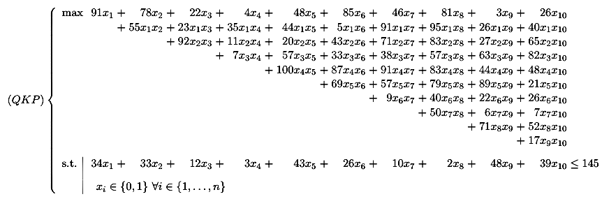

Back to (QKP) Instances main page
Each (QKP) instance correspond to a file containing the following informations:
Here is an example concerning a 10-variable instance:
r_10_100_13
10
91 78 22 4 48 85 46 81 3 26
55 23 35 44 5 91 95 26 40
92 11 20 43 71 83 27 65
7 57 33 38 57 63 82
100 87 91 83 44 48
69 57 79 89 21
9 40 22 26
50 6 7
71 52
17
0
145
34 33 12 3 43 26 10 2 48 39
Comments
Density : 100.00 %
Seed : 13
This example corresponds to the following (QKP) instance:

Last update : 06/12/2002 - Contact : Eric.Soutif@univ-paris1.fr